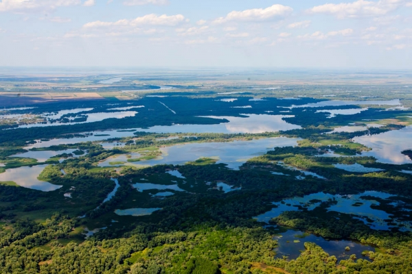

Habitatul Deltei Dunării
În arealul deltei au fost identificate 29 de tipuri de habitate de interes comunitar, astfel:
- Ape stătătoare oligotrofe până la mezotrofe cu vegetație din Littorelletea uniflorae și/sau Isoëto-Nanojuncetea ;
- Ape puternic oligo-mezotrofe cu vegetație bentonică de specii de Chara ;
- Bancuri de nisip acoperite permanent de un strat mic de apă de mare;
- Comunități cu salicornia și alte specii anuale care colonizează terenurile umede și nisipoase;
- Comunități de lizieră cu ierburi înalte higrofile de la nivelul câmpiilor, până la cel montan și alpin;
- Cursuri de apă din zonele de câmpie, până la cele montane, cu vegetație din Ranunculion fluitantis și Callitricho-Batrachion ;
- Dune cu Hippophae rhamnoides
- Depresiuni umede intradunale;
- Dune mobile embrionare (în formare);
- Dune fixate cu vegetație herbacee perenă (dune gri);
- Galerii ripariene și tufărișuri ( Nerio-Tamaricetea și Securinegion tinctoriae );
- Lacuri eutrofe naturale cu vegetație tip Magnopotamion sau Hydrocharition ;
- Lacuri distrofice și iazuri;
- Lagune costiere;
- Mlaștini calcaroase cu Cladium mariscus ;
- Pajiști cu Molinia pe soluri calcaroase, turboase sau argiloase ( Molinion caeruleae ).
